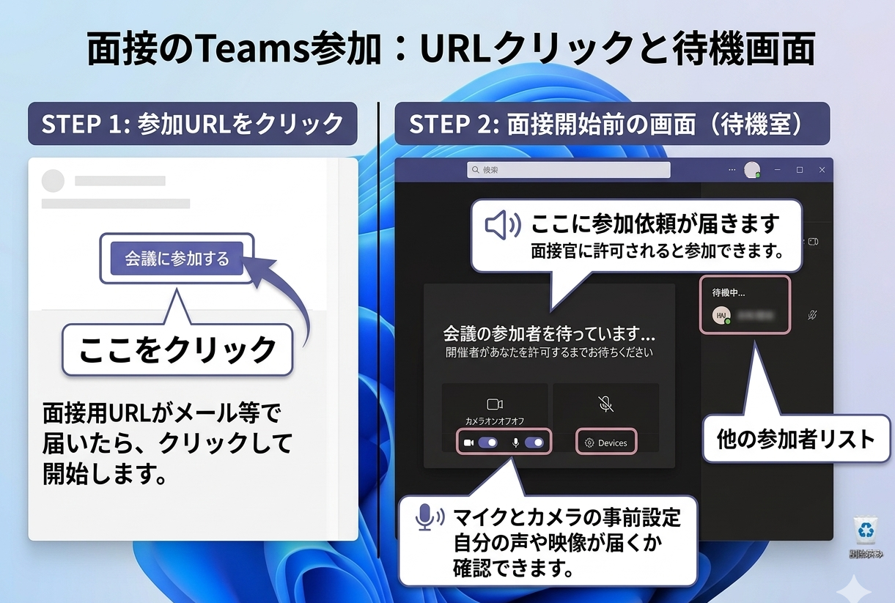

1-4_a. Microsoft Teams の確認ポイント
Microsoft Teams は事前に共有された資料（PDFやPPT）を
画面内で読み返せる機能があり、企業側の情報把握がしやすいです。
Microsoft Teams は事前に共有された資料（PDFやPPT）を
画面内で読み返せる機能があり、企業側の情報把握がしやすいです。
入室前に、マイク・カメラ・表示名が正しく設定されているかを確認しておくことが大切です。
面接中に迷わないよう、よく使うボタンの位置や役割を事前に把握しておきましょう。
面接開始前に、自分の声が入るか、カメラが映るか、相手の音声が聞こえるかを一通り確認しておくと安心です。


Microsoft Teams も、Google Meet や Zoom と同様に、面接直前に初めて触るのではなく、事前に一度開いてどこに何のボタンがあるかを確認しておくことが重要です。